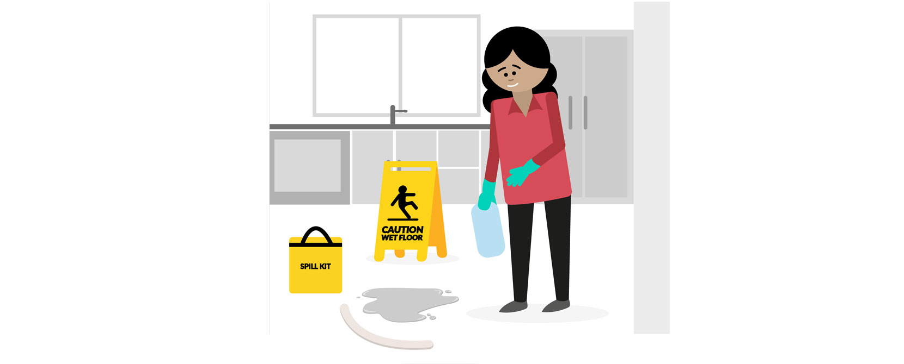
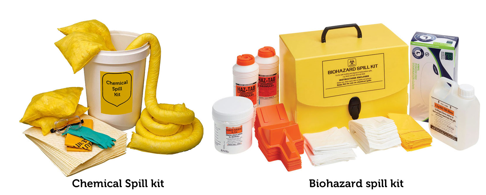

Work through the following scenario to respond to a spills emergency. This is not an assessment. In each step, select the action you would take. You can try this activity as many times as you like.
Spill emergency
Choose the options in the scenario to best manage this spill emergency.
You go into the kitchen area and find a puddle of liquid on the floor.
The smell tells you it is industrial grade cleaning bleach.
Residents and other staff could slip on this liquid. Contact with this chemical can cause skin burns.
Breathing the fumes from this chemical can be dangerous and poisonous.
This needs attention, quickly! What should you do next?
Good choice!
The first step should always be to prevent everyone else at the facility from coming in contact with the liquid
If the liquid is spilled all over the kitchen, then close the doors and do not allow anyone in until it’s cleaned up
If the liquid puddle is small, then place appropriate signs around it to alert everyone walking through the kitchen to stay clear
What would you do now that the area is secured and you’ve isolated the hazard?
Good choice!
Your supervisor will let everyone know not to go into the kitchen until the liquid problem is resolved.
They will also tell you to stay there and wait for another PCA to bring you a spills kit to clean up the spill.
What would you do next after you receive the spill kit?
Don’t hurry!
You may pass out, injure yourself or be infected before you clean the spill if you do not protect yourself using appropriate Personal Protective Equipment (PPE).
You need a mask to block odours and protect you from breathing in chemical fumes and
infectious germs.
You also need gloves to protect your skin from chemical burns or, if it is blood, the gloves will protect you from infection.

Good Choice!
If you are cleaning a blood or urine spill normal latex gloves are appropriate but they are NOT adequate if you are cleaning bleach or other harsh chemicals.
If you are cleaning up a corrosive chemical, you need a thicker material like leather gloves. Usually the appropriate gloves come in the spill kit.
Also, make sure that you wear overalls to protect your body and a mask to protect your lungs from breathing in toxic fumes and infectious germs and to block any offensive odours.

Always read the instructions and follow it…
Always read the instructions and follow them carefully. Different spill kits may have different instructions.
After you clean up the spill, what should you do next?
Good Choice!
Never throw contaminated or hazardous waste in with ordinary rubbish.
Now that you have eliminated the hazard, what should you do next?
You are the only one who knows the area is now safe.
Therefore, before you get back to work you need to let your supervisor know, so they can inform everyone.
Great!
You call your supervisor and tell them that you have cleaned up the spill and disposed of the waste safely. They will instruct you to remove the signage. You are then free to get back to your normal work duties.
Your supervisor may ask you to complete an incident report.
Now that you have successfully finished this activity, let’s recap the main steps you need to take to respond to spills.
Secure the area around the spill using appropriate signage.
Use the DECT phone to alert your supervisor and ask for advice and someone to bring you a spill kit.
Put on the required PPE.
Follow the instructions on the spill kit to make sure you clean up the spill safely.
Dispose of the yellow bag along with other clinical or hazardous waste, to avoid contamination, injury or infection.
Remove protective signage and call the supervisor again to let them know you have safely cleaned the spill and the area is safe again for others to use.
After you respond to an emergency situation of any sort, your supervisor will advise you if you need to fill out an incident report.
Not quite,
Before calling your supervisor, it is safer to secure the area first. Even though you are in the kitchen next to the liquid puddle, you may get distracted whilst talking on the phone and not notice a resident or co-worker walking into the kitchen.
If you do not secure the area around the spill first, you risk people slipping, which could cause an injury.
That is not a good idea.
Using a rag, whether dirty or clean, to absorb the spill could make things worse.
It will not stop the spread of infection or the release of chemical fumes.
Chemical, blood or urine spills need a professional spills kit that can clean the spill safely, leaving no liquid or contamination behind.
When it is a chemical use a chemical spills kit.
When it is blood or other bodily fluids use a biohazard spills kit.
Oops! That could be dangerous.
Remember that this could be a contamination hazard, especially if it is blood or other bodily fluids.